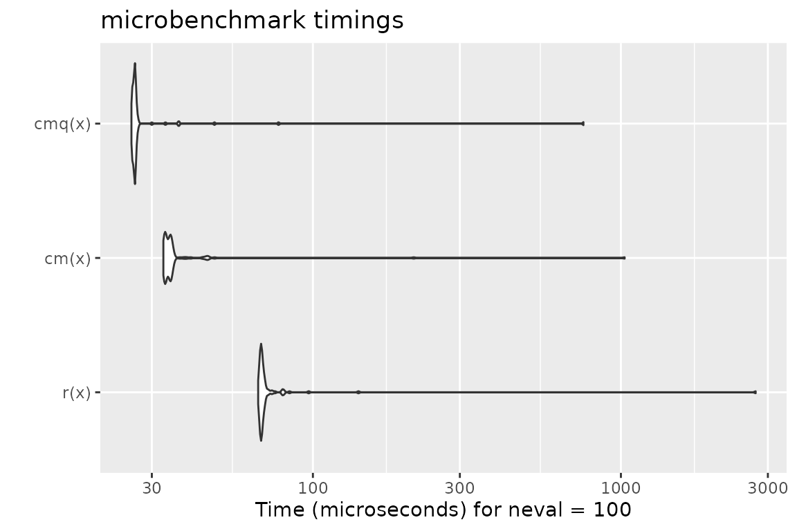
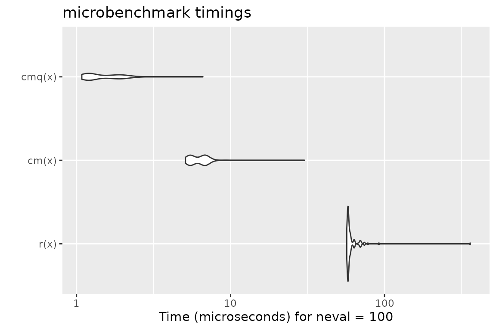

Ever used an R function that produced a not-very-helpful error message, just to discover after minutes of debugging that you simply passed a wrong argument?
Blaming the laziness of the package author for not doing such standard checks (in a dynamically typed language such as R) is at least partially unfair, as R makes theses types of checks cumbersome and annoying. Well, that’s how it was in the past.
Enter checkmate.
Virtually every standard type of user error when passing arguments into function can be caught with a simple, readable line which produces an informative error message in case. A substantial part of the package was written in C to minimize any worries about execution time overhead.
Intro
As a motivational example, consider you have a function to calculate the faculty of a natural number and the user may choose between using either the stirling approximation or R’s factorial function (which internally uses the gamma function). Thus, you have two arguments, n and method. Argument n must obviously be a positive natural number and method must be either "stirling" or "factorial". Here is a version of all the hoops you need to jump through to ensure that these simple requirements are met:
fact <- function(n, method = "stirling") { if (length(n) != 1) stop("Argument 'n' must have length 1") if (!is.numeric(n)) stop("Argument 'n' must be numeric") if (is.na(n)) stop("Argument 'n' may not be NA") if (is.double(n)) { if (is.nan(n)) stop("Argument 'n' may not be NaN") if (is.infinite(n)) stop("Argument 'n' must be finite") if (abs(n - round(n, 0)) > sqrt(.Machine$double.eps)) stop("Argument 'n' must be an integerish value") n <- as.integer(n) } if (n < 0) stop("Argument 'n' must be >= 0") if (length(method) != 1) stop("Argument 'method' must have length 1") if (!is.character(method) || !method %in% c("stirling", "factorial")) stop("Argument 'method' must be either 'stirling' or 'factorial'") if (method == "factorial") factorial(n) else sqrt(2 * pi * n) * (n / exp(1))^n }
And for comparison, here is the same function using checkmate:
fact <- function(n, method = "stirling") { assertCount(n) assertChoice(method, c("stirling", "factorial")) if (method == "factorial") factorial(n) else sqrt(2 * pi * n) * (n / exp(1))^n }
Function overview
The functions can be split into four functional groups, indicated by their prefix.
If prefixed with assert, an error is thrown if the corresponding check fails. Otherwise, the checked object is returned invisibly. There are many different coding styles out there in the wild, but most R programmers stick to either camelBack or underscore_case. Therefore, checkmate offers all functions in both flavors: assert_count is just an alias for assertCount but allows you to retain your favorite style.
The family of functions prefixed with test always return the check result as logical value. Again, you can use test_count and testCount interchangeably.
Functions starting with check return the error message as a string (or TRUE otherwise) and can be used if you need more control and, e.g., want to grep on the returned error message.
expect is the last family of functions and is intended to be used with the testthat package. All performed checks are logged into the testthat reporter. Because testthat uses the underscore_case, the extension functions only come in the underscore style.
All functions are categorized into objects to check on the package help page.
In case you miss flexibility
You can use assert to perform multiple checks at once and throw an assertion if all checks fail.
Here is an example where we check that x is either of class foo or class bar:
f <- function(x) { assert( checkClass(x, "foo"), checkClass(x, "bar") ) }
Note that assert(, combine = "or") and assert(, combine = "and") allow to control the logical combination of the specified checks, and that the former is the default.
Argument Checks for the Lazy
The following functions allow a special syntax to define argument checks using a special format specification. E.g., qassert(x, "I+") asserts that x is an integer vector with at least one element and no missing values. This very simple domain specific language covers a large variety of frequent argument checks with only a few keystrokes. You choose what you like best.
checkmate as testthat extension
To extend testthat, you need to IMPORT, DEPEND or SUGGEST on the checkmate package. Here is a minimal example:
# file: tests/test-all.R library(testthat) library(checkmate) # for testthat extensions test_check("mypkg")
Now you are all set and can use more than 30 new expectations in your tests.
test_that("checkmate is a sweet extension for testthat", { x = runif(100) expect_numeric(x, len = 100, any.missing = FALSE, lower = 0, upper = 1) # or, equivalent, using the lazy style: qexpect(x, "N100[0,1]") })
Speed considerations
In comparison with tediously writing the checks yourself in R (c.f. factorial example at the beginning of the vignette), R is sometimes a tad faster while performing checks on scalars. This seems odd at first, because checkmate is mostly written in C and should be comparably fast. Yet many of the functions in the base package are not regular functions, but primitives. While primitives jump directly into the C code, checkmate has to use the considerably slower .Call interface. As a result, it is possible to write (very simple) checks using only the base functions which, under some circumstances, slightly outperform checkmate. However, if you go one step further and wrap the custom check into a function to convenient re-use it, the performance gain is often lost (see benchmark 1).
For larger objects the tide has turned because checkmate avoids many unnecessary intermediate variables. Also note that the quick/lazy implementation in qassert/qtest/qexpect is often a tad faster because only two arguments have to be evaluated (the object and the rule) to determine the set of checks to perform.
Below you find some (probably unrepresentative) benchmark. But also note that this one here has been executed from inside knitr which is often the cause for outliers in the measured execution time. Better run the benchmark yourself to get unbiased results.
Benchmark 1: Assert that x is a flag
library(checkmate) library(ggplot2) library(microbenchmark) x = TRUE r = function(x, na.ok = FALSE) { stopifnot(is.logical(x), length(x) == 1, na.ok || !is.na(x)) } cm = function(x) assertFlag(x) cmq = function(x) qassert(x, "B1") mb = microbenchmark(r(x), cm(x), cmq(x)) print(mb)
## Unit: microseconds
## expr min lq mean median uq max neval
## r(x) 5.255 5.6265 182.76480 5.7595 5.9625 17674.466 100
## cm(x) 3.576 3.7800 51.62881 4.1115 4.3030 4623.539 100
## cmq(x) 2.526 2.6850 16.14479 2.8700 3.1445 1219.733 100autoplot(mb)
## Coordinate system already present. Adding new coordinate system, which will replace the existing one.
Benchmark 2: Assert that x is a numeric of length 1000 with no missing nor NaN values
x = runif(1000) r = function(x) stopifnot(is.numeric(x), length(x) == 1000, all(!is.na(x) & x >= 0 & x <= 1)) cm = function(x) assertNumeric(x, len = 1000, any.missing = FALSE, lower = 0, upper = 1) cmq = function(x) qassert(x, "N1000[0,1]") mb = microbenchmark(r(x), cm(x), cmq(x)) print(mb)
## Unit: microseconds
## expr min lq mean median uq max neval
## r(x) 18.187 18.8875 67.97447 19.2935 19.6635 4849.686 100
## cm(x) 8.057 8.5820 25.20723 9.1795 9.8495 1471.279 100
## cmq(x) 7.412 7.7215 20.18867 8.2085 8.9795 1151.894 100autoplot(mb)
## Coordinate system already present. Adding new coordinate system, which will replace the existing one.
Benchmark 3: Assert that x is a character vector with no missing values nor empty strings
x = sample(letters, 10000, replace = TRUE) r = function(x) stopifnot(is.character(x), !any(is.na(x)), all(nchar(x) > 0)) cm = function(x) assertCharacter(x, any.missing = FALSE, min.chars = 1) cmq = function(x) qassert(x, "S+[1,]") mb = microbenchmark(r(x), cm(x), cmq(x)) print(mb)
## Unit: microseconds
## expr min lq mean median uq max neval
## r(x) 1338.917 1423.7160 1498.9922 1437.2240 1457.1745 4813.580 100
## cm(x) 97.134 104.9560 122.4552 106.5040 111.1245 1255.389 100
## cmq(x) 109.577 115.4375 131.2044 117.7525 120.4530 1380.202 100autoplot(mb)
## Coordinate system already present. Adding new coordinate system, which will replace the existing one.
Benchmark 4: Test that x is a data frame with no missing values
N = 10000 x = data.frame(a = runif(N), b = sample(letters[1:5], N, replace = TRUE), c = sample(c(FALSE, TRUE), N, replace = TRUE)) r = function(x) is.data.frame(x) && !any(sapply(x, function(x) any(is.na(x)))) cm = function(x) testDataFrame(x, any.missing = FALSE) cmq = function(x) qtest(x, "D") mb = microbenchmark(r(x), cm(x), cmq(x)) print(mb)
## Unit: microseconds
## expr min lq mean median uq max neval
## r(x) 154.941 166.5005 221.73929 173.0645 184.4630 4314.153 100
## cm(x) 44.697 47.4225 61.89355 48.5160 51.1215 1121.507 100
## cmq(x) 32.782 34.7640 47.21507 35.6175 36.6820 1108.944 100autoplot(mb)
## Coordinate system already present. Adding new coordinate system, which will replace the existing one.
# checkmate tries to stop as early as possible x$a[1] = NA mb = microbenchmark(r(x), cm(x), cmq(x)) print(mb)
## Unit: microseconds
## expr min lq mean median uq max neval
## r(x) 100.625 150.460 153.21298 152.6695 155.5015 175.121 100
## cm(x) 7.786 8.527 10.68919 10.9335 12.0890 39.905 100
## cmq(x) 1.504 1.862 2.84344 2.5480 3.6715 15.332 100autoplot(mb)
## Coordinate system already present. Adding new coordinate system, which will replace the existing one.
Benchmark 5: Assert that x is an increasing sequence of integers with no missing values
N = 10000 x.altrep = seq_len(N) # this is an ALTREP in R version >= 3.5.0 x.sexp = c(x.altrep) # this is a regular SEXP OTOH r = function(x) stopifnot(is.integer(x), !any(is.na(x)), !is.unsorted(x)) cm = function(x) assertInteger(x, any.missing = FALSE, sorted = TRUE) mb = microbenchmark(r(x.sexp), cm(x.sexp), r(x.altrep), cm(x.altrep)) print(mb)
## Unit: microseconds
## expr min lq mean median uq max neval
## r(x.sexp) 46.804 65.7565 104.11190 66.9890 69.1715 3210.917 100
## cm(x.sexp) 19.312 20.0855 36.29233 21.8970 22.4625 1381.276 100
## r(x.altrep) 59.967 79.1020 86.42290 80.0325 81.8810 548.457 100
## cm(x.altrep) 5.564 6.1475 7.90351 8.0215 8.4990 19.718 100autoplot(mb)
## Coordinate system already present. Adding new coordinate system, which will replace the existing one.
Extending checkmate
To extend checkmate a custom check* function has to be written. For example, to check for a square matrix one can re-use parts of checkmate and extend the check with additional functionality:
checkSquareMatrix = function(x, mode = NULL) { # check functions must return TRUE on success # and a custom error message otherwise res = checkMatrix(x, mode = mode) if (!isTRUE(res)) return(res) if (nrow(x) != ncol(x)) return("Must be square") return(TRUE) } # a quick test: X = matrix(1:9, nrow = 3) checkSquareMatrix(X)
## [1] TRUEcheckSquareMatrix(X, mode = "character")
## [1] "Must store characters"checkSquareMatrix(X[1:2, ])
## [1] "Must be square"The respective counterparts to the check-function can be created using the constructors makeAssertionFunction, makeTestFunction and makeExpectationFunction:
# For assertions: assert_square_matrix = assertSquareMatrix = makeAssertionFunction(checkSquareMatrix) print(assertSquareMatrix)
## function (x, mode = NULL, .var.name = checkmate::vname(x), add = NULL)
## {
## if (missing(x))
## stop(sprintf("argument \"%s\" is missing, with no default",
## .var.name))
## res = checkSquareMatrix(x, mode)
## checkmate::makeAssertion(x, res, .var.name, add)
## }# For tests: test_square_matrix = testSquareMatrix = makeTestFunction(checkSquareMatrix) print(testSquareMatrix)
## function (x, mode = NULL)
## {
## isTRUE(checkSquareMatrix(x, mode))
## }# For expectations: expect_square_matrix = makeExpectationFunction(checkSquareMatrix) print(expect_square_matrix)
## function (x, mode = NULL, info = NULL, label = vname(x))
## {
## if (missing(x))
## stop(sprintf("Argument '%s' is missing", label))
## res = checkSquareMatrix(x, mode)
## makeExpectation(x, res, info, label)
## }Note that all the additional arguments .var.name, add, info and label are automatically joined with the function arguments of your custom check function. Also note that if you define these functions inside an R package, the constructors are called at build-time (thus, there is no negative impact on the runtime).
Calling checkmate from C/C++
The package registers two functions which can be used in other packages’ C/C++ code for argument checks.
These are the counterparts to qassert and qtest. Due to their simplistic interface, they perfectly suit the requirements of most type checks in C/C++.
For detailed background information on the register mechanism, see the Exporting C Code section in Hadley’s Book “R Packages” or WRE. Here is a step-by-step guide to get you started:
- Add
checkmateto your “Imports” and “LinkingTo” sections in your DESCRIPTION file. - Create a stub C source file
"checkmate_stub.c", see below. - Include the provided header file
<checkmate.h>in each compilation unit where you want to use checkmate.
File contents for (2):
#include <checkmate.h> #include <checkmate_stub.c>
Session Info
For the sake of completeness, here the sessionInfo() for the benchmark (but remember the note before on knitr possibly biasing the results).
## R version 4.0.2 (2020-06-22)
## Platform: x86_64-apple-darwin17.0 (64-bit)
## Running under: macOS Catalina 10.15.7
##
## Matrix products: default
## BLAS: /Library/Frameworks/R.framework/Versions/4.0/Resources/lib/libRblas.dylib
## LAPACK: /Library/Frameworks/R.framework/Versions/4.0/Resources/lib/libRlapack.dylib
##
## locale:
## [1] en_US.UTF-8/en_US.UTF-8/en_US.UTF-8/C/en_US.UTF-8/en_US.UTF-8
##
## attached base packages:
## [1] stats graphics grDevices utils datasets methods base
##
## other attached packages:
## [1] microbenchmark_1.4-7 ggplot2_3.3.2 checkmate_2.0.0-9000
##
## loaded via a namespace (and not attached):
## [1] knitr_1.30 magrittr_1.5 munsell_0.5.0 colorspace_1.4-1
## [5] R6_2.4.1 ragg_0.4.0 rlang_0.4.8 stringr_1.4.0
## [9] tools_4.0.2 grid_4.0.2 gtable_0.3.0 xfun_0.18
## [13] withr_2.3.0 ellipsis_0.3.1 htmltools_0.5.0 systemfonts_0.3.2
## [17] yaml_2.2.1 assertthat_0.2.1 rprojroot_1.3-2 digest_0.6.25
## [21] tibble_3.0.4 lifecycle_0.2.0 pkgdown_1.6.1.9000 crayon_1.3.4
## [25] textshaping_0.1.2 farver_2.0.3 vctrs_0.3.4 fs_1.5.0
## [29] glue_1.4.2 memoise_1.1.0 evaluate_0.14 rmarkdown_2.4
## [33] stringi_1.5.3 pillar_1.4.6 compiler_4.0.2 desc_1.2.0
## [37] scales_1.1.1 backports_1.1.10 pkgconfig_2.0.3